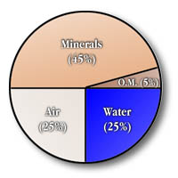
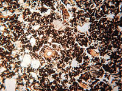

|
|
|
| A scoopful of soil looks the same throughout...or does it? Upon closer examination, you might be able to see particles of sand or clay, tiny organisms, plant matter or even water. The soil is like a big sponge; numerous tiny pores wind through its structure. Some pores are so tiny that even a bacteria can not enter. Other pores meander until they are blocked by an organic matter particle or a small aggregate. Some pores will be waterlogged; others dry. The soil is a chemical factory producing thousands of different organic chemicals as a result of the action of living organisms. We cannot see them but the soil contains enzymes, sugars starches, proteins, DNA and so on. All of these chemicals are constantly being used up and recreated in a never-ending cycle. | |||
 Soil is a three phase system Soil made up of solids, liquids and gases. For growing plants, each phase is essential for their life and growth. The solid part is the mineral (non-living or inorganic) material and the living (organic) matter components. Water and air make up the liquid and gas parts of the soil. The amounts of each type of matter in the soil determine the type of soil as classified by scientists. An "average" mineral soil sample, which comprises most of the soil in agricultural Saskatchewan, consists of about 45% mineral matter, 25% air, 25% water and 1% - 5% organic matter. Organic soils, found in bogs and wetlands of northern Saskatchewan, are composed of at least 20% organic matter.
| |||
 Mineral particles are formed from rock by physical and chemical weathering processes. The size and grouping of the various particles affect the characteristics of soil such as texture. Primary minerals come directly from rock such as quartz, feldspars and micas. Secondary minerals such as clays and salts are formed from primary particles by weathering Gases - occupy pores or spaces between the many particles in soil; most commonly found gases in soil include nitrogen, oxygen and carbon dioxide. The respiration of plant roots and microbes generally increase the levels of oxygen and carbon dioxide relative to the earth's atmosphere which is composed mainly of 78% nitrogen, 21% oxygen and 1% carbon dioxide. Soil gases are essential to the life cycles of soil animal organisms and plants. Water - in its liquid or gaseous form, water may occupy pore spaces not occupied by gases. Water acts as a medium where nutrients from the minerals and decaying organic matter are released and made available to plant roots other organisms Water is also an effective temperature regulator of the soil, giving the living organisms a more stable environment to grow and reproduce.
| |||

Remains of plants, animals and their wastes provide most nutrients for soil organisms and plant growth; the constant cycling of matter maintains the nutrient content in soil. Well-decomposed matter is called Humus. The amount of organic matter affects soil fertility, water carrying capacity, and tilth (looseness of soil -- allows plant roots room to grow and breathing space for soil organisms). Living organisms -- billions of tiny plants and animals, such as bacteria, fungi, worms, insects and protozoa, live in the soil. A single gram of fertile topsoil may contain a trillion bacteria or more! These organisms, along with larger plants and animals affect the amount of characteristics of soil such as the amount of organic matter present. In much of Saskatchewan, this organic matter (living and dead) is concentrated in a rich, dark, top layer of soil called topsoil. (see image)
|